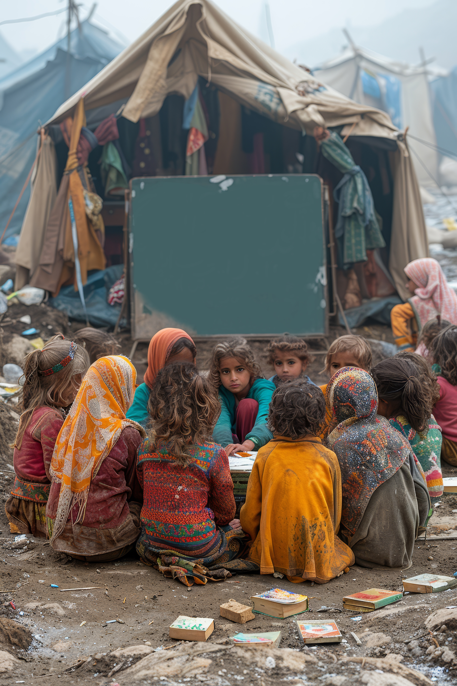

Quality Education: Success Stories & Case Studies
Many students have transformed their lives through quality education. Take the story of Aisha, a young girl from a rural village, who, despite limited resources, topped national exams thanks to dedicated teachers and a scholarship program.
Harvard and MIT are known for academic excellence, but even lesser-known institutions have made a mark. A small university in India, Ashoka University, is gaining recognition for its liberal arts education and research-driven approach.
Digital classrooms are reshaping education. Khan Academy, an online learning platform, provides free, high-quality courses,enabling students worldwide to learn at their own pace.

The "Teach for All" initiative has placed thousands of passionate educators in underprivileged schools, significantly improving literacy rates and student motivation in developing countries.
Despite financial hardships, Maria, a refugee student, pursued her dream of becoming a doctor through scholarships and online courses, proving that determination and access to quality education can change lives.